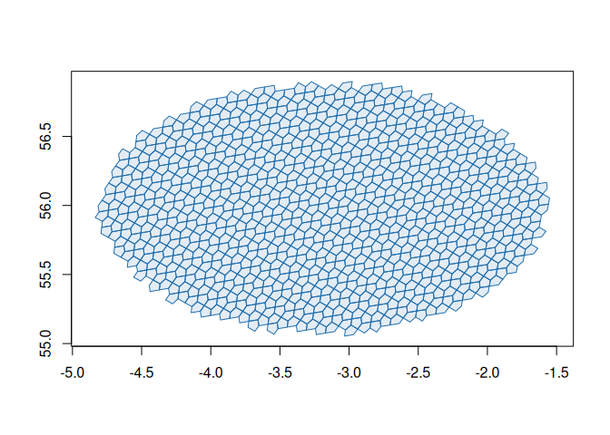

a5R provides R bindings for the A5 pentagonal geospatial index, powered by the a5 Rust crate via extendr.
A5 partitions the Earth’s surface into pentagonal cells across 31 resolution levels. Cells are equal-area, encoded as 64-bit integers, and achieve millimetre-level precision at the finest resolution.
Installation
install.packages("a5R")Or install the development version from GitHub:
# install.packages("pak")
pak::pak("belian-earth/a5R")You will need a working Rust toolchain (cargo and rustc).
Quick example
library(a5R)
# Index a point to a cell
cell <- a5_lonlat_to_cell(-3.19, 55.95, resolution = 10)
cell
#> <a5_cell[1]>
#> [1] 6344be8000000000
# Get the boundary polygon
a5_cell_to_boundary(cell)
#> <wk_wkb[1] with CRS=OGC:CRS84>
#> [1] <POLYGON ((-3.175718 55.93546, -3.145905 55.97569, -3.151641 56.01921, -3.219413 56.00818, -3.226037 55.96443, -3.175718 55.93546...>
# Navigate the hierarchy
a5_cell_to_parent(cell)
#> <a5_cell[1]>
#> [1] 6344be0000000000
a5_cell_to_children(cell)
#> <a5_cell[4]>
#> [1] 6344be2000000000 6344be6000000000 6344bea000000000 6344bee000000000
# Create a collection of cells whose centres fall within a great-circle distance of 100km from the origin cell
cells <- a5_spherical_cap(cell, radius = 100000) |>
a5_uncompact(resolution = 10)
plot(a5_cell_to_boundary(cells), col = "#206ead20", border = "#206ead", asp = 1)
See vignette("a5R") for a full walkthrough of indexing, boundaries, hierarchy, traversal, and geometry-to-cell conversion.
Features
- Vectorised Rust core — all operations implemented in Rust and called from R via extendr. Benchmarks confirm identical results to the Python, JavaScript, and DuckDB A5 implementations.
-
vctrs + wk integration — cell indices use an
a5_celltype with tibble support; geometries return aswk_wkb/wk_wktvectors compatible with sf and terra. -
Geometry indexing —
a5_polygon_to_cells()anda5_linestring_to_cells()map polygons and great-circle lines to the cells that cover them. -
Traversal —
a5_grid_disk()anda5_spherical_cap()select neighbours by hop count or great-circle distance. -
Multi-threading — opt-in parallel processing via rayon for vectorised operations. See
vignette("multithreading").
Acknowledgements
A5 was created by Felix Palmer. This package is a thin R wrapper around his work and would not exist without it. The Query-farm team maintain the DuckDB A5 extension, which wraps the same Rust crate and provided a valuable reference for this project.